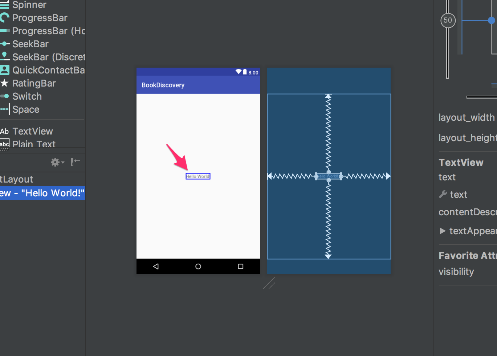

Layout Editor / ConstraintLayoutを使用したレイアウト実装と動作確認
Androidアプリ開発を始めるから引き続きの学習ページです。
学習ポイント
- Layout Editor
- Widget / View などのコンポーネント
- エミュレータの起動、確認方法
蔵書検索アプリ起動時に表示される検索画面のレイアウト構成を作りながら、
Layout Editorや画面を構成する要素について学習します。
また、作成したレイアウトをエミュレータという仮想デバイスを使い表示確認を通して使い方を学習します。
Layout Editor / ConstraintLayout
Androidアプリに表示する画面のレイアウト構成を作るためにはLayout EditorというAndroid Studioの機能を使います。
Androidアプリのプロジェクト開始時に生成されたレイアウトxmlファイルにウィジェット(Widget)やビュー(View)を配置し、ウィジェットごとに制約を設定して以下画像のように表示位置を決めていきます。
Layout Editor
Android Studio 2.2で追加されたレイアウト構成の機能、以前までも類似する機能はあったが使いにくく、xmlファイルを直接修正することが多かったのですが、改善されたとこで視覚的にWidgetやViewを配置しやすくなった。
特にConstrainsLayoutと合わせて使うことで画面のレイアウト作成でxmlファイルを直接修正する必要が無くなってきたことで初学者の学習コストやハードルも下がってきました。
Layout Editor内、各領域の名称は以下の通りです。
| No. | 領域名 | 説明 |
|---|---|---|
| ① | Palette | レイアウトに配置できるウィジェットとレイアウトリストを表示されています |
| ② | Component Tree | レイアウトのビュー階層を表示/移動することができます、Viewの重なりもここで調整します |
| ③ | ツールバー | レイアウトの外観設定やプロパティを編集するためのボタンが表示されています |
| ④ | デザイン エディタ | 実際の見た目が確認できるデザインビューと制約を確認できるブループリントビューが表示されまる |
| ⑤ | Properties | 現在選択されているビューの詳細な情報が表示されます |
ConstraintLayout
Android 2.3(Gingerbread)以上を対象に開発を行う場合に利用することが可能なコンポーネントです。
constraint(制約)をWidgetやViewに設定することで画面内での配置を決めることができます。
また、従来からあるの”Linear Layout”や”Relative Layout”コンポーネントに比べネスト構造を減らした実装を行うことができるようになりxmlファイルを確認する場合でも簡単になりました。
検索画面のレイアウト作成
アプリ起動時に表示される検索画面のレイアウトを作成を始めます、
Androidアプリで画面レイアウトを構成するのは、xmlという形式のファイルになります。activity_main.xmlというファイルを開き修正していきます。
app -> res -> layout -> activity_main.xml

以下の画像のようにLayout Editorが表示されたら、サンプルの為で始めから表示されている“Hello World”をクリックしてdeleteキーを押して削除します

これで画面上に何もなくなりスッキリしました。
では新しくウィジェットなどを配置する前に今回開発する蔵書検索アプリの起動時画面を見直してみましょう。
完成した画面を見ると以下のウィジェットが配置されています。
- 文字入力できるウィジェットが一つ
- ボタンとしてクリックができるウィジェットが２つ
全部で３つのウィジェットを使いレイアウトが構成されていることがわかりました。
まずはアプリで文字入力を行うためにEditTextというウィジェットからデザインビューに配置していきます。
Android開発で用意されているウィジェットやビューはLayout Editor内のPaletteエリアに全て表示されています。
ではEditTextを配置するためにPaletteエリアからPlain Textをクリックしたまま引っ張ってデザインビューでクリックを離します。
続いてウィジェットやビューをデザインビューに乗せたら表示させたい位置に配置するために、”editText”の各変に制約を設定していきます、
“editText”は画面中央より少し左上に表示したいので、まずは画面左隅と隣合うように制約をつけます。
“editText”左枠に表示されている ◯をクリックしたまま画面の左端まで引っ張って放します。
“editText”が以下の画面のように画面左隅に近づきます。
上記の手順で画面左端と”editText”の左辺を隣接する”制約”が設定されました。
続けて上下と右辺も同じように各画面端と隣接する制約を設定してみてください。
上下左右の全てに制約を付けると”editText”は画面の真ん中に表示さされます。
“editText”は中央より少し左上に配置したいので制約の縦横”バイアス”細かい位置調整します
バイアス設定のツマミを動かすと対象の方向で位置を動かすことができます
| バイアス方向 | 設定値 |
|---|---|
| 垂直バイアス | 40 |
| 水平バイアス | 25 |
ボタンを２つ配置していきます、PaletteエリアからButtonをクリックしたまま引っ張りデザインビュー上で放します
“蔵書検索”ボタンを配置のため制約を設定していきます
| Buttonの辺 | 隣り合わせる箇所 |
|---|---|
| 上辺 | 画面上端 |
| 左辺 | “editText”右端 |
| 下辺 | 画面下端 |
| 右辺 | 画面右端 |
先ほどの”editText”と同じ高さに調整するため、バイアスを調整します
| バイアス方向 | 設定値 |
|---|---|
| 垂直バイアス | 40 |
| 水平バイアス | 50 |
Buttonに表示される文言を変更するために、右のAttributesエリアから”text”項目を探し、“蔵書検索”と入力します
残りの”閲覧履歴”ボタンを画面の通り制約を使って配置してみましょう
ヒント１：ウィジェットの辺同士に制約をつけることもできます
これで検索画面のレイアウトが完成しましたのでエミュレータにて表示確認をしてみましょう。
表示確認
レイアウトやプログラムを修正したら動かして確認してみたくなりますね、
今回はAndroid Studioに内臓されているエミュレータ（仮想デバイス）を使って表示確認をしてみます。
エミュレータや実機でアプリを実行するためには下記画面のRunボタンをクリックします
“Select Deployment Target”と書かれたダイアログが表示されますが、ここには接続されている実機やエミュレータなど、Androidアプリを実行するデバイスを選ぶことができます。
USBで接続されたAndroidデバイスや既にエミュレータをインストールされているPCでない場合は以下のように何も表示されないと思います。
今回はエミュレータを新規作成して使用しますので、Create New Virtual Deviceをクリックして新しいエミュレータを作成します。
作成するエミュレータを選びますのでPixelを選択してNextをクリックします
エミュレータにインストールするAndorid OSのバージョンを選択します。
API Level 24のNougatのDownloadをクリックします
API Level 24 Nougatの仮想OSイメージのダウンロードが始まるので、完了を待ちます。
仮想OSイメージのダウンロードが終わったらFinishをクリックします。
ダウンロードの完了したNougatを選択してNextをクリックします。
エミュレータの名前や設定変更画面では変更は行わずにFinishをクリックします
エミュレータの作成が終わると、実行するデバイスの選択画面に戻ります
今回は作成したエミュレータの名前が表示されるので、Pixel API 24を選択してOKをクリックします
Androidのエミュレータが起動し
エミュレータの画面に作成したレイアウトが表示されれば成功です！
デザイン課題
最後に一つ課題で復習してみましょう。
EditTextの上にTextViewを以下のレイアウトの様に配置してください。
画面に表示される文言や制約の設定まで設定してください。
これでAndroidアプリのレイアウト作成とエミュレータでの実行方法と表示確認は完了です。
次のページでは作成したレイアウトのボタンやEditTextがクリックや文字入力された時のプログラムを実装していきます。
ボタンイベントの実装